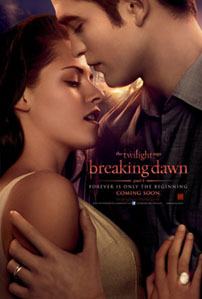
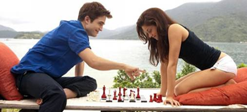

Review Breaking Dawn Part 1
Minggu, 1 Desember 2013

Jika terdapat satu kesamaan yang pasti antara Harry Potter and the Deathly Hallows – Part 1 dengan The Twilight Saga: Breaking Dawn – Part 1, selain dari jalan cerita kedua film tersebut yang menawarkan sebuah alur kisah fantasi, maka hal tersebut dapat ditemukan dari kerakusan para produsernya untuk meraup keuntungan komersial sebanyak mungkin dari para penggemar berat franchise tersebut. Jujur saja, seri terakhir dari novel Harry Potter dan The Twilight Saga dapat saja ditampilkan dalam sebuah film cerita secara penuh – walau harus menghabiskan durasi waktu yang melebihi durasi penayangan standar film-film lainnya. Namun dengan alasan untuk ‘menampilkan seluruh esensi cerita yang terdapat dalam bagian terakhir dari seri novel tersebut,’ para produser film akhirnya membuatkan dua bagian film dari satu novel tersebut.
Breaking Dawn sendiri jelas merupakan sebuah bagian cerita dari The Twilight Saga yang paling dinantikan oleh para penggemar seri tersebut. Tidak hanya merupakan sebuah film yang menjadi seri pamungkas dari sebuah franchise yang telah dimulai semenjak tahun 2008 lalu, namun di Breaking Dawn pula hubungan antara ketiga karakter utamanya yang begitu ikonik, Bella Swan, Edward Cullen dan Jacob Black, diberikan sebuah keterangan yang jelas. Sebuah pernikahan. Hilangnya sebuah kesucian. Datangnya sebuah kehidupan baru. Sebuah pilihan antara aborsi atau tetap mempertahankan kehidupan baru tersebut. Dan sebuah konflik antara dua kelompok yang semakin meruncing.Breaking Dawn jelas merupakan sebuah tahapan yang lebih dewasa jika dibandingkan dengan seri-seri The Twilight Saga lainnya.
Dalam The Twilight Saga: Breaking Dawn – Part 1 yang kali ini berada di bawah pengarahan sutradara Bill Condon – yang sebelumnya mengarahkan film peraih Academy Awards, Dreamgirls (2008) – Edward Cullen (Robert Pattinson) dan Bella Swan (Kristen Stewart) akhirnya memutuskan untuk melanjutkan hubungan percintaan mereka ke tahap yang lebih serius lagi: pernikahan. Tentu saja, keputusan Bella untuk menikahi Edward membuat sahabatnya, yang telah sekian lama memendam perasaan cinta padanya, Jacob Black (Taylor Lautner), patah hati… membuang surat undangan yang dikirimkan Bella kepadanya, membuka kaosnya, tampil telanjang dada selama 30 detik untuk kemudian berlari di tengah derasnya hujan, berubah menjadi seekor serigala dan memutuskan menjauh dari peradaban manusia untuk sementara. Tragis.
Jangan khawatir! Tepat di malam perayaan pesta pernikahan Edward dan Bella, Jacob kembali dan memutuskan untuk memberikan restunya pada pernikahan tersebut. Edward dan Bella sendiri kemudian melanjutkan perayaan pesta pernikahan mereka dalam sebuah perjalanan bulan madu ke sebuah pulau terpencil di negara Brazil dimana… Bella berusaha merayu Edward untuk berhubungan intim dengannya dan Edward berusaha untuk menahan insting vampir-nya agar tidak membunuh Bella ketika mereka sedang… well… bercinta. Dan boom! Beberapa hari setelah Edward berhasil ‘menunaikan tugasnya’ sebagai seorang suami, Bella kemudian hamil! Sesuatu hal yang tidak terduga sebelumnya. Kehamilan Bella sendiri kemudian memberikan masalah baru karena janin yang berada di rahim Bella tersebut tumbuh secara cepat dan mengancam kehidupan orang yang mengandungnya.

Seperti yang telah diungkapkan di bagian awal, The Twilight Saga: Breaking Dawn – Part 1 mengandung begitu banyak bagian cerita yang sebenarnya dapat saja dipangkas dan ditiadakan kehadirannya untuk kemudian dapat memadatkan keseluruhan isi cerita dari novel Breaking Dawn menjadi satu film. Maksudnya… apakah benar-benar perlu untuk menampilkan prosesi pernikahan antara karakter Edward dan Bella yang sama sekali minim drama secara penuh? Apakah penonton perlu untuk menyaksikan keseluruhan bagian ketika karakter Bella berusaha meyakinkan karakter Edward untuk mau bercinta dengannya? Apakah penonton perlu tahu bahwa keduanya menyempatkan diri untuk menghabiskan waktu bersama dengan bermain catur atau berenang bersama di bawah derasnya aliran sebuah air terjun? Tidak. Tidak. Tidak. Namun untuk memenuhi kuota durasi waktu sebuah film, adegan-adegan tersebut ditampilkan dengan durasi yang panjang dan dialog-dialog yang terdengar konyol. Jadi jangan heran jika keseluruhan adegan pernikahan serta bulan madu karakter Edward dan Bella menghabiskan durasi satu jam dari The Twilight Saga: Breaking Dawn – Part 1.
Pun begitu, tidak dapat dipungkiri bahwa pengarahan Bill Condon mampu memberikan sebuah atmosfer baru dalam pengisahan jalan cerita franchise ini. Walaupun deretan adegan tersebut sangat terkesan begitu dipanjang-panjangkan durasinya, namun mampu dihadirkan dengan tata produksi yang begitu mewah dan sangat nyaman untuk disaksikan. Oh, mereka yang sebelumnya telah setia dalam mengikuti setiap perkembangan versi film dari The Twilight Sagasepertinya tahu mengenai kualitas seperti apa yang akan mereka dapatkan dalam seri kali ini. Dan sepertinya hal tersebut akan cukup berbuah manis. Ekspektasi rendah akan membuat Anda akan cukup mampu terhibur dan menikmati setiap ‘kekonyolan’ jalan cerita yang hadir dalam The Twilight Saga: Breaking Dawn – Part 1.
Setidaknya, jika satu jam pertama dari The Twilight Saga: Breaking Dawn – Part 1 tidak memberikan sebuah perjalanan emosional yang cukup untuk Anda, Condon masih mampu menyuplai beberapa adegan dengan jalan cerita yang lebih kuat pada paruh kedua film ini. Diisi dengan adegan perjuangan karakter Bella dalam mempertahankan janin yang ia kandung serta sebuah konflik yang kian terbuka antara klan vampir dan klan serigala, alur emosional film ini mulai mampu tampil dan harus diakui cukup berhasil untuk dapat tampil menarik, khususnya dengan bantuan tata rias yang diberikan pada Kristen Stewart untuk menekankan perjuangan yang ia lalui. Sekali lagi, jika saja bukan Condon yang berada di kursi penyutradaraan film ini, mungkin saja The Twilight Saga: Breaking Dawn – Part 1 gagal untuk tampil lebih berwarna daripada seri-seri sebelumnya.
Bill Condon juga sepertinya mendengarkan banyak kritikan terhadap seri-seri The Twilight Saga sebelumnya. Terlalu banyak Taylor Lautner tampil telanjang dada memang tidak baik untuk daya pemikiran banyak. Terlebih jika ia tampil telanjang dada dengan kemampuan akting yang jauh dari kata memuaskan. Dalam The Twilight Saga: Breaking Dawn – Part 1, adegan yang melibatkan karakter Jacob Black diminimalisir, yang berarti Anda akan melihat Taylor Lautner dalam durasi waktu yang lebih sedikit. Ia juga tidak tampil dalam keadaan telanjang dada setiap waktu. Namun yang paling penting, penonton akan dapat merasakan bahwa Lautner mengalami perkembangan akting dalam penampilannya. Tidak. Tidak dalam skala bahwa ia akan memenangkan sebuah Academy Awards. Tapi cukup untuk membuat Anda dapat merasakan bahwa ia telah berusaha untuk menampilkan kemampuan aktingnya.
Oh tentu. Kellan Lutz masih tampil dengan cara berbicara dan ekspresi yang kelewat datar (dan tata rias yang juga kelewat tebal?). Namun selain Lutz, deretan pengisi departemen akting The Twilight Saga: Breaking Dawn – Part 1tampil dalam penampilan akting yang tidak lebih mengecewakan dari seri-seri sebelumnya. Chemistry yang terjalin antara Pattinson dan Stewart tampil lebih kuat dalam seri ini. Para pemeran karakter pendukung, walaupun hadir dengan durasi penampilan yang terbatas, juga mampu memberikan tambahan warna tersendiri bagi jalan cerita film ini. Sama sekali tidak mengecewakan, dan dalam dunia The Twilight Saga, kata tersebut adalah sebuah pencapaian yang cukup gemilang.
Jadi… kemana The Twilight Saga: Breaking Dawn – Part 1 akan membawa penontonnya kali ini. Secara tematis, seri kali ini memang merupakan sebuah lompatan kedewasaan yang cukup jauh. Tidak hanya itu, The Twilight Saga: Braking Dawn – Part 1 juga menandai sebuah lompatan kualitas yang berhasil dicapai oleh sutradara Bill Condon. Tentu saja lompatan tersebut tidak tampil begitu jauh. Namun dengan apa yang telah ditampilkan film-film yang ada dalam franchise seri ini sebelumnya, adalah cukup aman untuk mengatakan bahwa The Twilight Saga: Breaking Dawn – Part 1 adalah bagian terbaik dari keseluruhan franchise ini. Tidak akan memenangkan sekelompok penggemar baru. Tapi setidaknya cukup untuk memuaskan mereka yang telah lama mengikuti perjalanan franchise ini atau justru semenjak lama telah jatuh cinta dengannya.